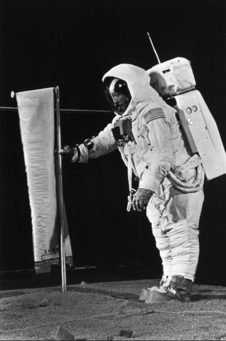
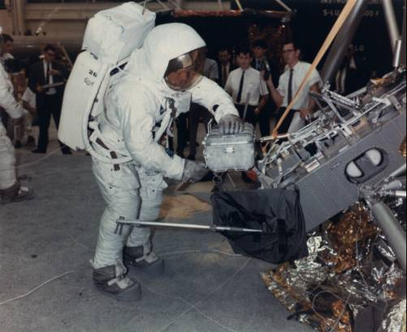
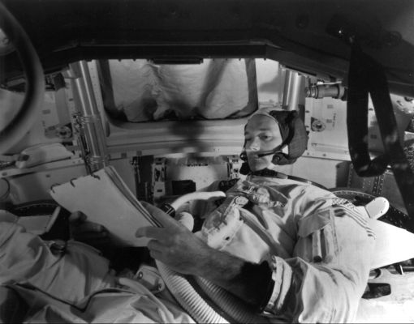
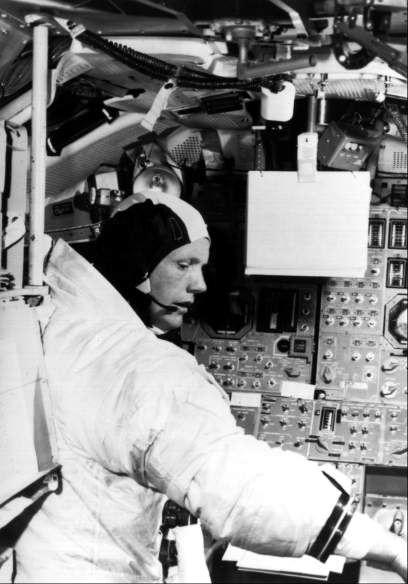
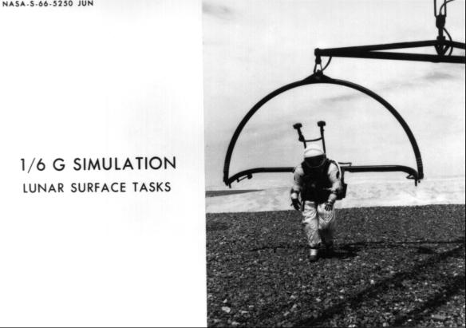
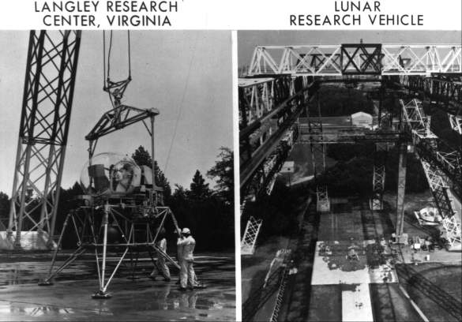

Chief Astronaut Donald Slayton established a leapfrog pattern of assigning a crew to back one mission, skip two, and then fly the next. When Neil Armstrong, with Fred Haise to pilot the lunar module and Edwin Aldrin the command module, was named to back up Apollo 8, it seemed likely that his team would make the first lunar landing, if the two intervening missions were successful. Then, in late 1968, after Michael Collins recovered from a bone spur operation, Slayton moved Haise to backup lunar module pilot, put Collins in as prime crew command module pilot, and shifted Aldrin to the lunar module pilot slot. Completing the backup teams were James Lovell (commander), William Anders (command module pilot), and a support team made up of John Swigert, Ronald Evans, William Pogue, and Thomas Mattingly (Slayton assigned Mattingly as a fourth support crewman after President Nixon nominated Anders as Executive Secretary of the National Aeronautics and Space Council).16
One member of this lunar module crew would be the first man to walk on the moon - the first human being to step onto any celestial body besides the earth. The road leading to the determination of which pilot would have his name so registered in the annals of time was long, winding, and, in places, hard to follow.
In mid-1963, when the lunar module began to take on its final shape, NASA outlined the mission sequence to the news media in conservative tones. Emphasis was on the probability that one man would remain aboard to tend the lander's systems. There appeared to be no interest at the time in who would stay and who would get out. The following year, the agency identified the lunar module pilot to Congress and newsmen as the man who would take a two-hour hike on the surface, while the commander waited for his return. But the same year - 1964 - the Grumman-led Apollo Mission Planning Task Force study indicated that both men could safely leave the craft, one at a time, for up to three hours apiece. This group had no interest in which man went out first; it was merely looking at the mission sequence to ensure adequate hardware designs.17
During the succeeding years, Apollo officials Joseph Shea and George Mueller frequently spoke publicly on lunar surface operations. Shea said in July 1966 that the crewmen would take turns at the three-hour walks, perhaps going out as many as three times during an 18-hour stay. Mueller, speaking to an Australian audience two weeks before the fire in January 1967, made it sound rather as though both men would go out, arm in arm, when he remarked that "the two astronauts will disembark through the docking door and begin the manned exploration of the moon."18 So far as is known, no one asked who would do these things - or how they would be done. With nearly 50 astronauts to choose from and with the names of most of them unfamiliar to the public, people found it difficult to conjecture about the identity of a moon-walking crew. In fact, after all the centuries of science fiction and all the years of Apollo's existence as a viable program, it was still hard to envision someone's actually landing on the moon.
By late summer of 1968, it was time to find out if the astronauts could unload and set up the experiments in the Apollo lunar surface experiments package (ALSEP), put together by The Bendix Corporation. NASA Headquarters asked the Manned Spacecraft Center to schedule a demonstration on 26 and 27 August. Schmitt and Don Lind were the test astronauts for the occasion, and Schmitt was not happy with the results. He said there was too much activity during the first period outside the spacecraft and there were no clear procedures for the second. At a review the next day, Apollo Spacecraft Program Manager George Low suggested that the first landing mission include only one walk on the surface. He listed priorities as he saw them: taking a sample of lunar material in the immediate vicinity of the lander, inspecting and photographing the vehicle to make sure everything was in order, gathering at least one box of selected lunar surface soil and rocks, and setting up either a "partial ALSEP" or an erectable antenna and a television camera. Low proposed that the planned field geology investigation be eliminated.19
Apollo Program Director Samuel Phillips, from Headquarters, had realized after watching the demonstration that plans for the lunar surface walk would need close attention and some sensible decisions. He asked Houston Director Robert Gilruth to poll that center's key leaders and forward their views so Mueller's management council could study the pros and cons of the proposed surface activities. At that time, Rose reported to his flight operations planning group on 30 August, the first landing mission had two flight plans. The first called for one crewman to leave the lander (although both would have the equipment for surface expeditions) and the deletion of the experiments package; the second plan required both the commander and the pilot to get out and set up the six experiments in the package. Houston knew that Phillips favored sending only one man out on the moon, but Gilruth wanted both crewmen to go, so they could assist each other, if necessary. Gilruth's managers also suggested deleting both the experiments package and the lunar geology investigation.20
Phillips passed Houston's recommendations on to the council, with the reminder that descent, landing, and ascent maneuvers were new tasks and that the astronauts needed all the training they could get. Eliminating the experiments package would give them an additional 180 hours to train for the more basic chores. Gemini experience had demonstrated the wisdom of proceeding step by step, with very light workloads on the early flights leading to more crowded schedules in later missions. This plan would mean a very small return in scientific data from the first lunar landing and would invite criticism from the scientific community. Wilmot Hess, in Houston, was already urging that at least some easily handled contingency experiments be included.
Phillips also told the management council of Houston's preference for a single period of exploration outside the spacecraft. Although he still did not agree that both pilots should get out, he conceded that more data would be gained from the interaction of two men with the lunar surface. Phillips added that the psychological effect on a crewman of landing on the moon and then being forbidden to step out on the surface must be considered. In its October meeting, the council approved the use of a scaled-down experiments package - an "early Apollo scientific experiments package" - consisting of two subpackages: one containing a passive seismic experiment, a solar cell array, an antenna, and two plutonium heaters; the other, a laser ranging retroreflector.21
Apparently the council sided with Houston in its views on activities outside the lander, because the center began planning for a two-man exploration at a mission review meeting on 1 November. The second astronaut would disembark after the first had been on the surface for an hour, and the total time outside would be three hours. Low asked his engineers to make sure that the control center was prepared to watch over the lander's systems while both men walked on the moon.

Aldrin, lunar module pilot for Apollo 11, sets up a solar wind experiment during a practice session.

Mission commander Armstrong, opening a lunar sample box, rests it on the lunar module's modular equipment stowage assembly (MESA) hatch.
When Houston began work on the two-man scheme, the planners used a 1964 concept that called for the lunar module pilot to emerge first. Armstrong and Aldrin began concentrating on Apollo 11 as soon as they finished their backup duties for Apollo 8 in December. Almost immediately, on the 20th, a procedures document listed the commander as the first crewman to leave the lunar module. On a summary minute-by-minute work chart, issued in January 1969, the crew positions - commander and lunar module pilot - were crossed through and the letters A and B were penciled in. A lunar surface operations chart, using these letters, was then published, but without any identification of either A or B.22

Collins practices tending the command module alone; on the mission, crewmates Armstrong and Aldrin will leave him in lunar orbit and descend to explore the moon's surface.

Armstrong practices in the lunar module simulator.
Collins wrote in Carrying the Fire that Armstrong had "exercised his commander's prerogative" and that Aldrin's "basic beef" was this switch in who crawled out first. But Slayton later took the credit (or blame) for making the change. "I observed the procedures under the old plan one day," he said, "and they appeared awkward to me." Slayton told Raymond G. Zedekar, in charge of preparing a lunar surface operations plan, to change the sequence. At the 15th lunar surface operations planning meeting on 14 February, Zedekar said that Aldrin would follow the commander to the lunar surface in less than the hour listed in the old plan, to assist Armstrong with the outside tasks, and that the lunar module pilot would return to the lander first. "If the CDR returns last," Zedekar remarked, "the crewmen will be in their proper respective positions in the LM." Since the portable life-sustaining backpacks were stored directly behind the lunar module pilot's crew station, getting out and then back in this sequence made crew movements in the cabin easier.23
Surprisingly, Mueller did not inform Administrator Thomas Paine* that the two men would take a 2-hour 40-minute walk, nor did he tell him that the order of exit had changed, until 7 April - at least, that was the date of his written report. Even more surprising was the fact that it was not until 14 April that a newsman asked Low, "Who will be the first out to the moon?" Low replied that, from "the present way that we're working, . . . the Commander gets out first." The change later roused a small furor. Low was awakened in the middle of the night on 27 June by a call from an Associated Press reporter, who told the Apollo manager that the wire service had a story" that Neil Armstrong had pulled rank on Buzz Aldrin." (Armstrong, incidentally, was a civilian and Aldrin a colonel in the Air Force.)** 24
Regardless of crew sequence, training was going to be rough. Although the scope of the mission had been reduced, many still wondered whether the astronauts could be ready by July. Until James McDivitt got his Apollo 9 crew off on its mission in early March, Armstrong's group had only third priority on the training simulators. Armstrong might have used the time to sharpen his lunar module piloting skill, but the lunar landing training vehicle - the apparent cross between a Rube Goldberg device and a child's tinker toy machine that was called by some observers the "flying bedstead" had been grounded. The Apollo 11 commander himself had ejected safely from a similar vehicle just before it crashed on 6 May 1968. Soon after completing that accident investigation in November, Joseph S. Algranti, head of Houston's Aircraft Operations Office, had bailed out of another crashing trainer on 8 December. The accident board reconvened, presenting its findings in mid-February 1969. Some of NASA's top officials thought the crew could get sufficient training on the static simulator and on the tower suspension facility at Langley. But the astronauts and their support personnel insisted that this free-flight vehicle was essential to provide the experience they needed before flying the last 150 meters to the lunar surface.25
In March, after two sessions, the Flight Readiness Review Board decided to resume the training flights. Harold E. Ream, who had flown these machines 35 times, was ready to put the trainer through a dozen hops in early April. Mueller agreed to let Ream test the craft but, he told Gilruth, he wanted another evaluation before any astronauts flew it. The next month, Slayton summarized for Gilruth and his top staff the aerodynamics and handling characteristics of the trainer, which had been modified to overcome its unstable tendencies. Gilruth's group was satisfied, and Mueller consented to the resumption of astronaut flights. During three consecutive days - 14-16 June (eight times on the final day) - Armstrong successfully rehearsed lunar landing operations with the free-flight machine.26
Although practicing the landing was critical, the crewmen did not stand around and wait to fly the trainer. They had plenty of other work to do. Armstrong and Aldrin polished procedures for their lunar surface activities, and they watched with keen interest the final push to qualify the extravehicular garb and life-sustaining systems. Collins, meanwhile, concentrated on those 18 rendezvous recipes in his cookbook, learning how to cope with all the different situations that the simulator personnel dreamed up to test his abilities.
In an attempt to simulate lunar surface conditions, Max Faget's group set up a model of the lander in a thermovacuum chamber in Houston. The chamber was not big enough for the pilots to move a hundred meters away from their craft as they planned to do on the moon, but the engineers did provide the desired lighting - a 15-degree sun angle - and the proper temperature range. The crew crawled out of the lander, pulled a package from the MESA (modular equipment stowage assembly) section in the descent stage, and deployed the experiments. During one of these sessions, Armstrong had to report: "Mission Control this is Apollo 11, we can't get the hatch open."27
While the chamber tests were going on, two dozen engineers, mostly from Faget's directorate, held monthly meetings on the status of the extravehicular mobility unit. James Chamberlin, one of the nation's top space vehicle and equipment designers, led the group, which operated much as Rose's flight operations planning team did. The Design Review Board studied the system, piece by piece, and then assigned Crew Systems Division specialists to work on specific problems and submit their resolutions for board approval. For example, Thomas Mattingly, the astronaut representative on the board, reported that the reflective gold coating on the helmet visors peeled after several cleanings with solvent, allowing light to leak through.
Another area under study was how well the crew could grasp lunar samples with gloved hands. During a chamber run, the systems people coated one of Armstrong's gloves with silicone and left the other uncoated. Armstrong reported that the treated glove worked better, and the board approved the change, which upset the scientists. Hess complained that the silicone would contaminate the lunar samples and pointed out that his group would have enough trouble with contamination by the fumes from the descent engine exhaust and the attitude thruster fuel. "Can't we get rid of [the silicone]?" Reminding Hess that time was too short to look for a substitute, Low refused. Crew Systems Chief Robert E. Smylie added that silicone was basically inorganic and that the tips of the glove fingers and the lunar boots were already made of that substance, so coating the gloves should not make much difference.28
Chamberlin's board also investigated suit fit and mobility. In chamber sessions on 27 March and 7 April, Armstrong complained that his sleeves were too tight and asked that some of the bulky material be removed from inside the elbow. When he bent his arms, he said, some of his capillary blood vessels ruptured. Aldrin, too, wanted adjustments, such as shorter suit arms. There was some discussion about how hard it would be to walk on the lunar surface wearing the big 85-kilogram pack on their backs - even though the moon had only one-sixth the earth's gravity. Using Don Lind as a test subject, Crew Systems discovered that there would be a small shift in the center of mass. The crewmen could compensate for this by leaning slightly forward. If they bent over too far, however, they might overbalance and fall.29
Throughout the training period, people worried about the crew's moving around on the moon. In March 1969, Phillips wrote Low that it bothered him that there was no way to measure energy expenditure or carbon dioxide production during the lunar walk. Low replied that the measurements already planned - oxygen and water consumption and heart rates - would tell what was happening and the systems monitors would watch the display indicators very closely.30

To train for walking on the moon, a harness rigged to support all but one-sixth of a man's weight was used by nearly all the astronaut corps.

For several years they also trained on the lunar landing training vehicle, at Langley Research Center, to simulate landing the lunar module.
In February 1969, NASA officials decided to construct a one-sixth gravity simulator in the centrifuge building to get a closer look at lunar locomotion. A pathway, with a simulated lunar surface, around the periphery of the 46-meter-diameter rotunda would provide a walkway of unlimited length. Dressed in full regalia and with umbilical lines attached to the instruments inside the centrifuge checking biological and metabolic data, an astronaut, suspended by a harness that would bear all but one-sixth of his weight, could practice for walking and working on the lunar surface. Since the simulator was completed too late in their training to be of much use to the Armstrong crewmen and since they did not plan to venture as far away from the lander as later crews, Armstrong and Aldrin would check out and evaluate the facility after their flight rather than before. Physicians were getting some of the desired data during underwater training (where locomotion was similar to that experienced in space) and in KC-135 aircraft Keplerian trajectories (which duplicated weightlessness for a few seconds at the top of the flight arc).31
During February, Mueller asked Gilruth to hold a lunar surface demonstration similar to the one given in August 1968. Gilruth arranged the exhibition for the latter part of April 1969, and Phillips' Certification Review Board would study the exercise to check on the status of that part of the mission. An extravehicular activity committee set up by Gilruth under his special assistant, Richard S. Johnston, had already conducted many reviews of the plans, procedures, and equipment. Mueller was pleased with the session, telling Paine that the simulation was smooth and the crew was "ready for the first lunar landing." Phillips was disturbed when the demonstrators used a rope pulley to haul equipment and samples up and down from the cabin to the surface and back. He suggested that the astronauts carry the materials in one hand. Low explained that the first rung on the ladder was 65 centimeters from the surface, and the crewmen could lift their legs only 30 centimeters with any ease. The astronauts would have to hop or pull themselves up, using both hands, which they had done successfully in water and on KC-135 aircraft. By the end of June, the final version of the lunar surface operations plan was completed.32
Armstrong and Aldrin also trained at other places, especially at Langley Research Center, where they worked on the suspended lunar landing trainer equipped with realistic surface views and lighting. On 12 June, NASA senior management agreed that the crew was ready for a 16 July launch. Less than a month later, on 7 July, Mueller told Paine that "if Apollo 11 continues to progress on plan, the first men will set foot on the moon two weeks from today."33
* Paine was no longer "Acting" head of the agency. On 5 March 1969, President Nixon had nominated him as Administrator, and on 3 April Vice-President Agnew had sworn him into office.
** Low informed the Public Affairs Officer in Houston that "the basic decision was made by my Configuration Control Board . . . based on a recommendation by the Flight Crew Operations Directorate. I am sure that Armstrong had made an input to this recommendation, but he, by no means, had the final say. The CCB decision was final."
16. NASA, "Apollo 11 Crew Announcement," news release 69-9, 9 Jan. 1969; MSC; news release 69-2,9 Jan. 1969; Michael Collins, Carrying The Fire: An Astronaut's Journeys (New York: Farrar, Strauss and Giroux, 1974), pp. 297, 312-14; "Apollo XI - Flight Crew Named for Possible Lunar Landing," MSC Roundup, 24 Jan. 1969; Cyril E. Baker, telephone interview, 1 April 1976. See also discussion on "Selecting and Training Crews" in chap. 11.
17. "Lunar Bug Mission Sequence Outlined," Aviation Week & Space Technology, 22 July 1963, p. 161; House Committee on Science anti Astronautics, Subcommittee on Manned Space Flight, 1965 NASA Authorization: Hearings on H.R. 9641 (Superseded by H.R. 10456), 88th Cong., 2nd sess., 1964, pp. 409, 442, and chart on crew activities; Donald E. Fink, "Apollo Chief, Co-pilot to Explore Moon," Aviation Week & Space Technology, 9 March 1964, pp. 22-23; Thomas G. Barnes et al., Grumman, "Apollo Mission Planning Task Force, Phase I Progress Report," LED-540-7, 4 May 1964, 1, pp. 3-4, 4-21; 2, pp. 7-87, 7-88.
18. Joseph F. Shea, "The Apollo Program," speech given in July 1966, p. 27; George E. Mueller, "Apollo Program," No. 3 in series of lectures at the University of Sydney, Australia, 10-11 Jan. 1967, p. III-21.
19. Leroy E. Day TWX to MSC, Attn.: Mgr., ASPO, "ALSEP Deployment Demonstration," 22 Aug. 1968; MSC, "Lunar Missions Review," 27 Aug. 1968.
20. TWX Phillips to MSC, Attn.: Gilruth, "Lunar Mission Planning," 29 Aug. 1968; MSC, "Results of 33rd G Mission FOP Meeting"; Gilruth to Phillips, "Proposed revisions to the first lunar landing mission plan," 6 Sept. 1968.
21. "Results of 35th G Mission FOP Meeting," enc., Phillips to OMSF Management Council, "EVA activities for the first Lunar Landing Mission," n.d.; A. E. Morse, Jr., to Mgr., ASPO, "KSC; Support for the: LM-5 Early Apollo Scientific Payload (EASEP)," 12 Nov. 1968; Phillips to Mueller, "Extravehicular Activities for the First Lunar Landing Mission," 19 Oct. 1968.
22. Low to NASA Hq., Attn.: Phillips, Lunar EVA capability, 14 Oct. 1968; MSC, "Mission Review of the First Lunar Extravehicular Activity," 1 Nov. 1968; Low memo, "Minutes of November 1, 1968, Monthly Mission Review (G Mission EVA)," 13 Nov. 1968; MSC, "Results of 13th Lunar Surface Operations Planning (LSOP) Meeting," 15 Nov. 1968; John H. Covington, "Reference EVA Procedures, Mission G (CM107/LM5)," 20 Dec. 1968, pp. 3-22, 3-23, 3-24; John B. Lee memo, "Mission G timeline," 11 Feb. 1969, with enc.
23. Collins, Carrying the Fire, p. 347; Robert Sherrod, "Men for the Moon," in Edgar M. Cortright, ed., Apollo Expeditions to the Moon, NASA SP-350 (Washington, 1975), p. 160; Slayton and Raymond G. Zedekar, telephone interviews, 18 March 1976; Grumman Aircraft Engineering Corp., Space Div., "Anatomy of the NASA Grumman Apollo Lunar Module," in Apollo Spacecraft News Reference (Bethpage, N.Y., 1969); MSC, "Results of 15th LSOP Meeting," 14 Feb. 1969; L. J. Riche, G. M. Colton, and T. A. Guillory, "Apollo 11, Apollo AS-506/CSM-107/LM-5, Preliminary Flight Plan," 15 April 1969, pp. 3-78, 3-79.
24. OMSF Weekly Report, 7 April 1969; Astronautics and Aeronautics, 1969: Chronology on Science, Technology, and Policy, NASA SP-4014 Washington, 1970 , pp. 68, 100; MSC, "Apollo Program History," briefing, 14 April 1969, tape D-1; Low to Brian M. Duff, "Press Inquiry," 27 June 1969, as cited in Ertel and Newkirk, Apollo Chronology, 4.
25. Collins, Carrying the Fire, pp. 327-28, 330; "Armstrong Unhurt in Ejection from Moon Lander Trainer," MSC Roundup, 10 May 1968; Mueller TWX to MSC and Flight and Langley Research Centers, Attn.: Gilruth, Paul F. Bikle, and Cortright, "LLTV Flight Readiness Review," 21 Nov. 1968; "There Comes a Time When It's Better to Go Than Stay," caption for photograph of LLTV crash on 8 Dec., MSC Roundup, 20 Dec. 1968; Mueller memo for LLTV-1 Review Board, "Investigation and Review of Crash of Lunar Landing Training Vehicle #1," 11 Dec. 1968; Mueller TWX to Langley, Flight Research, and MSC, Attn.: Dirs., "Lunar Landing Training Vehicle (LLTV) Review Board," 16 Dec. 1968; NASA, "Review Board Reconvened," news release 69-5, 8 Jan. 1969; Mueller TWX to MSC, Flight Research, and Langley, Attn.: Gilruth, Gene J. Matranga, William H. Phillips, and James B. Whitten, "Lunar Landing Training Vehicle (LLTV)," 13 Feb. 1969; Mueller to Gilruth, 19 Feb. 1969.
26. MSC, minutes, LLTV No. 2 Flight Readiness Review Board (FRRB), signed by Gilruth, 1 April 1969; MSC news release 69-24, 3 April 1969; "Lunar Landing Trainer Resumes Test Flight Program at Ellington," MSC Roundup, 18 April 1969; Mueller TWX to MSC, Attn.: Gilruth, 3 April 1969; Slayton memo, "Lunar Landing Training Vehicle (LLTV) aerodynamic characteristics," 23 May 1969; Gilruth TWX to NASA Hq.: Attn.: Maj. Gen. John D. Stevenson, 31 May 1969; Flight Crew Ops. Dir., Weekly Activity Report, 7-13 June 1969; OMSF Weekly Report, 16 June 1969.
27. MSC Flight Ops. Dir., "Flight Operations Plan, Mission G-1," 21 March 1969, p. 2-5; Slayton to Dir., Eng. and Dev. (E&D), 18 March 1969, with encs., "General Test Requirements" and "Chamber Training Schedule"; Randolph H. Hester memo for record, "LM EVA prep-exercise with Armstrong and Aldrin - Apollo 11 team," 12 May 1969; Johnnie W. Colburn memo for record, "Adequacy of LM 5/6 Crew Training Thermal Simulation," 26 May 1969.
28. Lee, minutes of EMU Design Review Board Meetings, 10 and 24 Jan., 7 and 20 Feb., 28 March, and 25 April 1969; Robert E. Smylie to Asst. Dir., Chem. and Mech. Sys., "EMU thermal testing," 18 March 1969; Harley L. Stutesman to Crew Sys. Div., Apollo Support Br. Sec. Heads, "LM-5 prime crew EMU fit check," 6 May 1969, and "Operation comments resulting from EMU lunar qual program," 8 April 1969, with enc.; Smylie to Mgr., ASPO, "Coating of EV gloves to improve grasping capabilities," 15 May 1969; Wilmot N. Hess to Mgr., ASPO, "EVA gloves," 19 May 1969; Low to Hess, "EVA gloves," 21 May 1969; Smylie to Mgr., ASPO, "EVA gloves," 26 May 1969.
29. Hester memo for record, "Comments by crew during suiting and debriefing on the 8' [2.4-meter] chamber runs held in Building 7 between 3/27/69 and 4/7/69," 2 May 1969; Charles C. Lutz memo, "EMU weight summary," 21 May 1969, with enc.; C. E. Whitsett, Jr., "Effect of the Extravehicular Mobility Unit on Man's Center of Mass and Inertias," 17 Feb. 1969.
30. Phillips to MSC, Attn.: Mgr., ASPO, "Initiation of a Program for the Measurement of Carbon Dioxide Production during Lunar Exploration," 1 March 1969; Low to Phillips, 5 May 1969, with enc., Faget to Mgr., ASPO, "Study of the Measurement of CO2 Production During Lunar Exploration," 25 April 1969, with enc., subj. as above.
31. Edwin Samfield to Eng. Div. Files, "Lunar Gravity Simulator Test Setup, Building 29," 6 Feb. 1969; Mueller to Gilruth, 14 Feb. 1969; Gilruth to Phillips, 14 March 1969, with enc., "Lunar Gravity Simulation Program Plan"; Phillips to Gilruth, 28 March 1969; Aleck C. Bond to Dir., Flight Crew Ops., "1/6th G Simulator in Building 29," 25 April 1969; Gilruth to Phillips, 20 May 1969; Bond to Dir., Flight Crew Ops., "1/6th G vertical simulator in Building 29," 20 May 1969; Slayton to Asst. Dir., Chem. and Mech. Sys., "One-sixth G simulator in Building 29," 29 May 1969.
32. Mueller to Gilruth, 10 Feb. 1969; Gilruth to Mueller, 24 Feb. 1969; Mueller to Gilruth, 26 March 1969; Phillips TWX to MSC, Attn.: Mgr., ASPO, "Apollo 11 Lunar Surface Activities Demonstration DCR," 8 April 1969; Richard S. Johnston memo, "NASA Committee on EVA," 10 April 1969, with enc., "EVA Guideline"; OMSF Weekly Report, 28 April 1969; Low memo for record, "Action items resulting from lunar surface extravehicular activity demonstration," 24 April 1969; Phillips to MSC, Attn.: Low, "Comments on Lunar Surface EVA Demonstration," 14 lay 1969; Low memo, "Lunar surface EVA demonstration," 2 June 1969; Low to NASA Hq., Attn.: Phillips, "Comments on lunar surface EVA demonstration," 9 July 1969; Johnston to Capt. William W. Wood, "Comments on Apollo Preliminary Lunar Surface Operations Plan," 20 May 1969; John K. Holcomb to North, "Review of Apollo 11 Preliminary Lunar Surface Operations Plan (LSOP)," 28 May 1969; William H. Wood, Jr., "Apollo 11 Lunar Surface Operations Plan: Final," 13 June 1969.
33. Low to Slayton, "Mueller's letter on lunar landing training," 17 March 1969, and "Langley nighttime simulations," 23 June 1969; Cortright to Gilruth, 27 June 1969; Phillips letter, "Apollo 11 Lunar Surface Operations Design Certification Review [DCR]," 29 May 1969; NASA, "Apollo 11 Launch July 16," news release, unnumbered, 12 June 1969; OMSF Weekly Reports, 16 June and 7 July 1969.